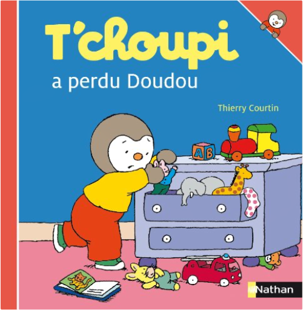
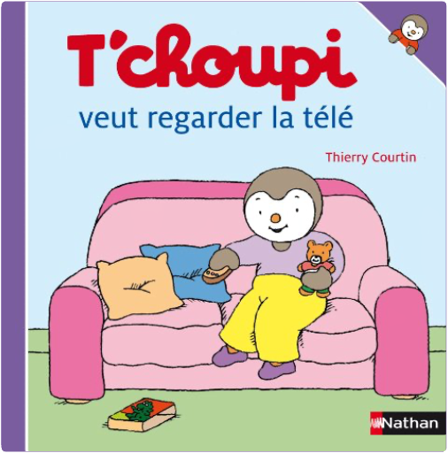
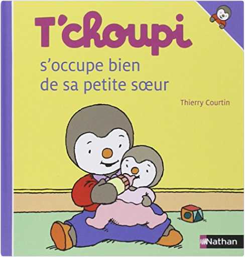
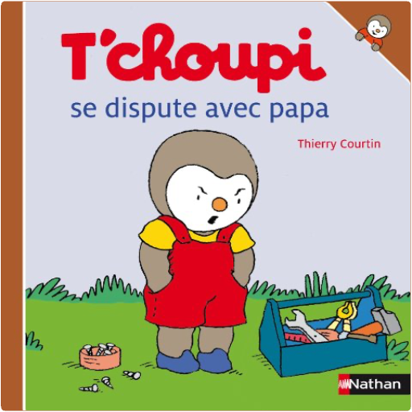

Tchoupi, l\ ami des petits T\ choupi a décidé d\ être discret, pour préparer de belles surprises à sa maman ! Tchoupi fait une cabane est le numéro 21 de cett...  T'choupi, tome 23 : a perdu doudouThierry Courtin Tchoupi, l\ ami des petits T\ choupi a perdu son doudou. Mais après avoir vu Pilou jouer sans sa peluche, T\ choupi va décider, lui aussi, de jouer autrement ...  T'choupi, tome 28 : veut regarder la téléThierry Courtin T'choupi veut regarder la télé |  T'choupi, tome 30 : s'occupe bien de sa petite soeurThierry Courtin Tchoupi, l\ ami des petits Une collection qui raconte les aventures de T\ choupi, le petit pingouin curieux, ouvert, enthousiaste et plein d\ énergie ! Fann...  T'choupi, tome 32 : se dispute avec papaThierry Courtin Tchoupi, l\ ami des petits T\ choupi veut faire du vélo mais il doit attendre que papa ait installé un panier dessus. Il est très impatient et papa est très e... |

Julien
Collection Total:
2 100 Items
2 100 Items
Last Updated:
Feb 15, 2025
Feb 15, 2025

 Made with Delicious Library
Made with Delicious Library